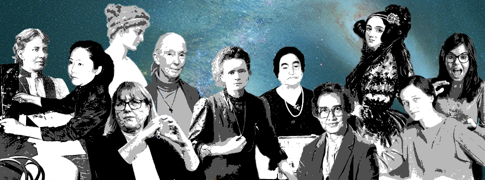

Las mujeres en la historia de la ciencia
La ciencia y sus descubrimientos han sido fundamentales para la configuración de la vida tal como la conocemos en la actualidad. Sin embargo, es común observar que, al preguntar a las personas sobre figuras destacadas en todos los ámbitos de la ciencia, suelen mencionarse nombres masculinos prominentes como Isaac Newton, Albert Einstein, Carl Sagan y Charles Darwin, entre otros. Aunque a veces se escucha el nombre de Marie Curie, esto resulta lamentable.
Quisiera dejar claro que no pretendo restar importancia a los trabajos de los hombres mencionados. Por el contrario, reconozco plenamente que sus contribuciones han sido cruciales para desafiar paradigmas científicos obsoletos de su época y han impulsado significativamente el progreso de la humanidad. No obstante, considero que dentro de esta vasta cantidad de contribuciones existen también trabajos sobresalientes realizados por mujeres, quienes, a pesar de los numerosos obstáculos que enfrentaron para estudiar y trabajar en el campo científico, han dejado una huella imborrable en la historia de la ciencia. Desafortunadamente, muchas de estas mujeres no han recibido el reconocimiento que merecen por parte de la historia.
Por lo tanto, valoro enormemente cualquier oportunidad que se presente para compartir las historias de estas mujeres brillantes. Invito a todos a familiarizarse con la vida y el trabajo de algunas de estas figuras femeninas destacadas en la ciencia. Además, insto a que esta información no se quede aquí, sino que se comparta con todas las personas posibles. Es crucial que criemos a nuestras hijas, hermanas y familiares con estas historias, para que siempre sepan que tienen el potencial de alcanzar cualquier meta que se propongan y que ninguna barrera, ya sea de género u otra índole, puede limitar sus aspiraciones.
